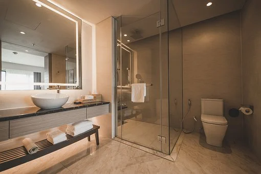
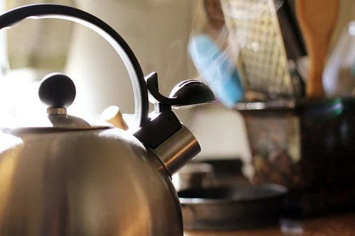
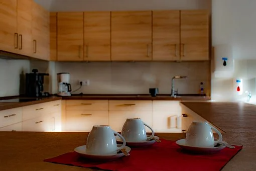
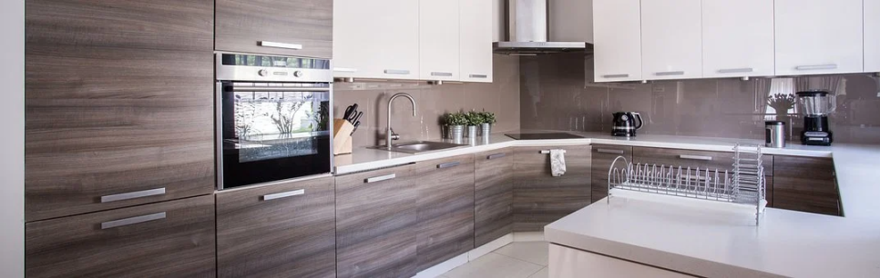
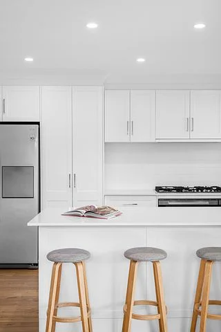

🏠 막힘이 반복된다면 내시경이 답!
용인 하수구막힘 전문 시공 후기

📋 작업 개요
- 위치: 용인
- 서비스 유형: 하수구막힘, 배관막힘, 뚫는업체
- 작업 일시: 2022. 4. 21. 10:20
- 업체명: 하수구수사대 (010-5615-2118)
🔍 문제 상황
아마 수시로 물을
사용하시는 상업 공간이라면
일반적인 주거 환경보다
더 막힘이 자주
발생하실 거예요.
하지만 여러 업체를 불러서
그때마다 하수구를 뚫었는데도
다시 같은 문제가
반복되는 일도 빈번하게 생기는데요.
금세 다시 막히는

🔎 원인 분석
💡 전문가 진단: 정밀 진단 장비를 사용하여 슬러지의 고착 여부를 판명하고 타격/세척 작업을 실시했습니다.
문제의 하수구 원인을
더 정확하게 알고 대처하기 위해서는
꼭 하수구 내시경이 필요합니다.
먼저 내시경 비용이
결코 저렴하지 않기에 보다
좋은 장비를 가지고 있는 업체를
선택하시는 것이 유리할 거예요.
좋은 내시경을 보유하고 있고
작업자의 촬영 기술 또한
뛰어나야 원인을 더욱

🔧 작업 과정
명확하게 알아볼 수 있는 거죠.
또한 현장에서는
막힘을 유발한 구조를 잘 파악하여
문제를 해결할 수 있는
능력이 무엇보다 중요할 텐데요.
배관 구조만 잘 알고
있더라도 더 빠르고
좁은 부위를 특정하여 내시경 검사를
실시하는 것이 가능합니다.
대부분 전문가가
현장에 도착하여 문제를 살펴보고
물이 다시 내려가는 걸 보면
다 끝났다 생각하는 분들이 많으세요.
하지만 알고 보면
제대로 해결을 해놓지 않고 가서
다시 동일한 일이 반복된다는 사실을


✅ 작업 완료
모르는 분들이 더 많습니다.
완벽하게 배관 안 원인 물질이
없어졌는지까지 확인하고
작업을 마무리하는 것이
내시경 작업의 핵심일 거예요.


⚠️ 하수구 배관 막힘 예방 및 관리 가이드
- ✅ 머리카락, 비닐, 물티슈 등 물에 분해되지 않는 이물질은 하수구 유입을 절대 금지해 주세요.
- ✅ 하수구 거름망을 씌우고 모여진 이물질은 주기적으로 쓰레기통에 바로 비워주셔야 합니다.
- ✅ 배관 노후가 심할 경우 이물질이 더 쉽게 걸리므로 주기적인 배관 세척(고압세척 등)을 권장합니다.
- ✅ 작업 후 1년 이내 재발 시 하수구수사대에서 무상 A/S 보증 서비스를 제공합니다.
💡 핵심 정리
- 확실한 장비 작업(내시경 점검 및 샤프트 스케일링)으로 원인을 뿌리 뽑습니다.
- 작업 후 1년 이내에 동일한 부위 재발 시 100% 무상 A/S 서비스를 보장합니다.
- 서울 · 경기 · 인천 전 지역에 24시간 언제든 긴급 출동할 수 있도록 항시 대기 중입니다.
❓ 자주 묻는 질문 (FAQ)
🚨 용인 하수구막힘 문제로 고민이신가요?
정확한 원인 진단과 확실한 시공으로 재발 없는 해결을 약속드립니다.
24시간 긴급 출동 | 서울 · 경기 · 인천 전지역 | 1년 내 재발 시 무상 A/S